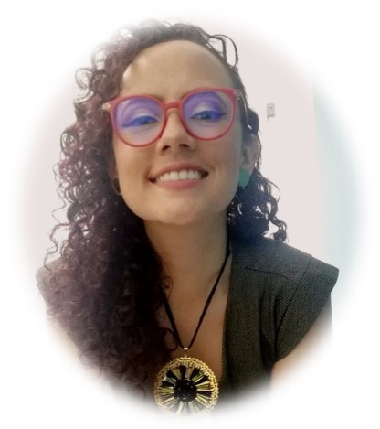

<div class="container">
    <div class="professional-container">
        <div class="professionals-header">
            <h2>
                ¿A quiénes <br> encontrarás aquí?
            </h2>
        </div>
        <div class="professionals-body">
            <div class="professional-card">
                <div class="card-header">
                    <h2>¡Yo soy Anzary Cobos Bautista!</h2>
                </div>
                <div class="card-body">
                    <div class="card-left">
                        <p>Una mujer apasionada, trabajadora social y especialista en intervención psicosocial que le apuesta a la salud mental y el bienestar desde una visión holística y personalizada, tu proceso es único porque tú eres una persona única.</p>
                        <p>Mi experiencia a lo largo de los últimos 10 años abarca el acompañamiento a diversas problemáticas tanto individuales como familiares y comunitarias, capacitándome constantemente para brindar mi mejor versión como profesional.</p>
                        <h3>¿Que podremos trabajar en conjunto?</h3>
                        <ul>
                            <li class="skills">Tu relación con tu pareja, tus padres, hijos o hermanos.</li>
                            <li class="skills">Herramientas para la comunicación asertiva.</li>
                            <li class="skills">Resolución de conflictos.</li>
                            <li class="skills">Crianza respetuosa.</li>
                            <li class="skills">Gestión de emociones desde estrategias holísticas.</li>
                            <li class="skills">Acompañamiento en procesos de cualquier tipo de violencia.</li>
                            <li class="skills">Proyecto de vida.</li>
                        </ul>
                    </div>
                    <div class="card-right"></div>
                </div>
            </div>
            <div class="professional-card">
                <div class="card-header">
                    <h2 class="title-julian">¡Yo soy Julián Echeverry!</h2>
                </div>
                <div class="card-body">
                    <div class="card-right left-julian"></div>
                    <div class="card-left right-julian">
                        <p>Un amante del deporte, la naturaleza y los animales, psicólogo de profesión, con amplia experiencia en el acompañamiento de la ansiedad, la depresión, el estrés crónico y el mejoramiento de las habilidades personales.  </p>
                        <p>Mi enfoque está basado en la atención plena, Mindfulness y la compasión desde las terapias cognitivo-conductuales de tercera generación, soy especialista en intervención psicosocial y magister en psicología forense. </p>
                        <p>Estaré dispuesto y abierto de poder acompañarte en tu proceso de sanación, el fortalecer tus habilidades y superar las dificultades de tu vida, cuento con la capacidad rápida y oportuna de adaptarme a tus necesidades emocionales. </p>
                        
                    </div>
                </div>
            </div>
        </div>
    </div>
</div>